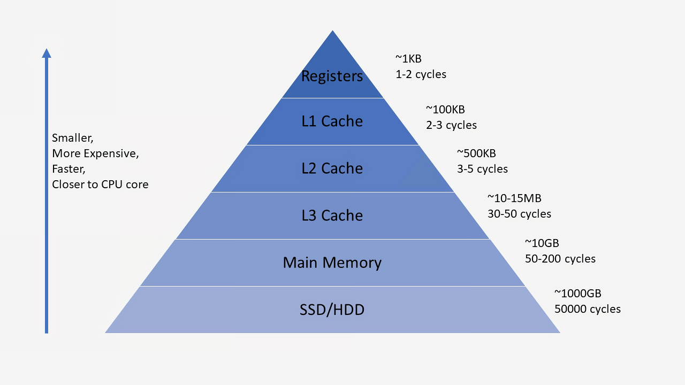

캐시(Cache)란 자주 사용하는 데이터나 값을 미리 복사해 놓는 임시 장소를 말한다.
캐시의 데이터는 일반적으로 RAM(Random Access Memory)과 같이 빠르게 액세스할 수 있는 하드웨어에 저장되며 소프트웨어 구성 요소와 함께 사용될 수도 있다.
캐시는 기본 스토리지 계층(SSD, HDD)에 액세스하여 데이터를 가져오는 더 느린 작업의 요구를 줄이고 데이터 검색의 성능을 높인다.
속도를 위해 용량을 절충하는 캐시는 일반적으로 데이터의 하위 집합을 일시적으로 저장한다.
완전하고 영구적인 데이터가 있는 데이터베이스와는 대조적이다.
캐시의 가장 큰 장점은 미리 복사해 놓은 데이터나 값에 더 빠른 속도로 접근 할 수 있다는 장점이 있다.
그 외에 애플리케이션의 성능 개선, 데이터베이스 비용 절감, 백엔드 부하 감소, 읽기 처리량 증가 등이 있다.
캐시는 데이터나 값에 빠른 속도로 접근 할 수 있지만 저장 공간이 작고 비용이 비싸다는 단점이 있다.
